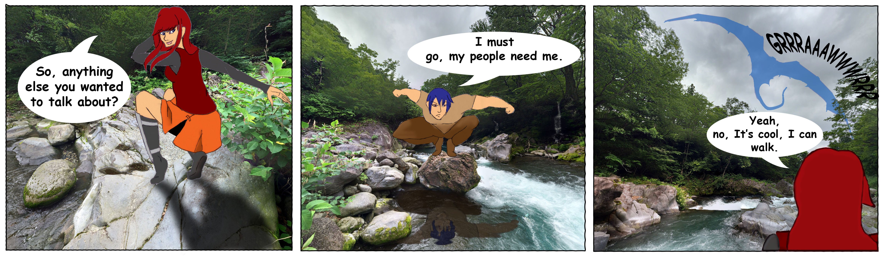
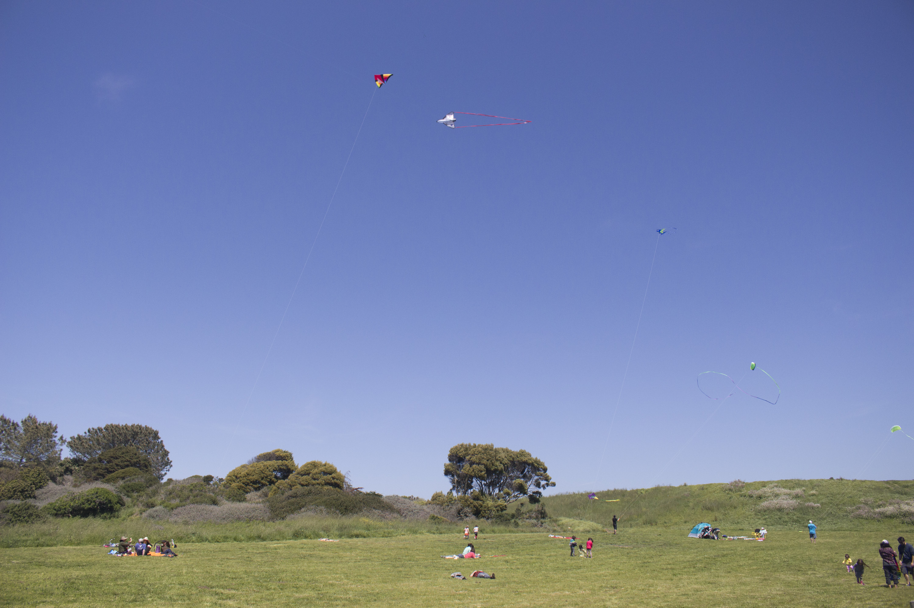
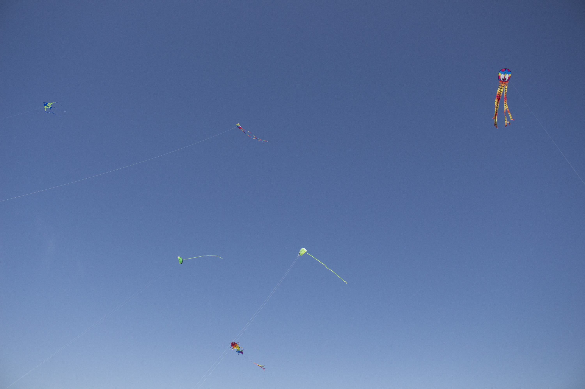
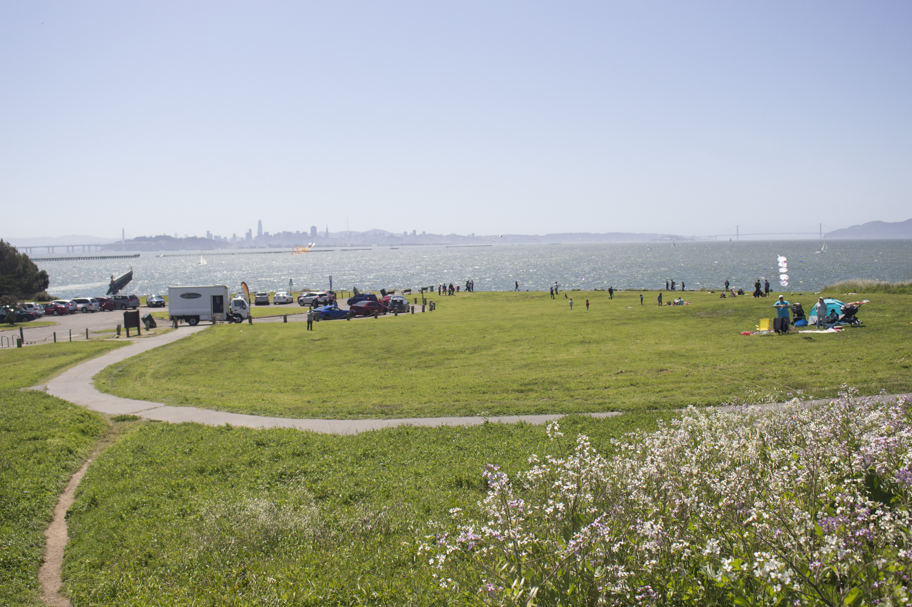
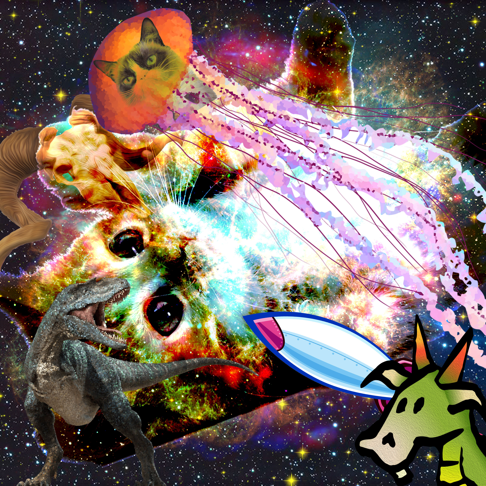
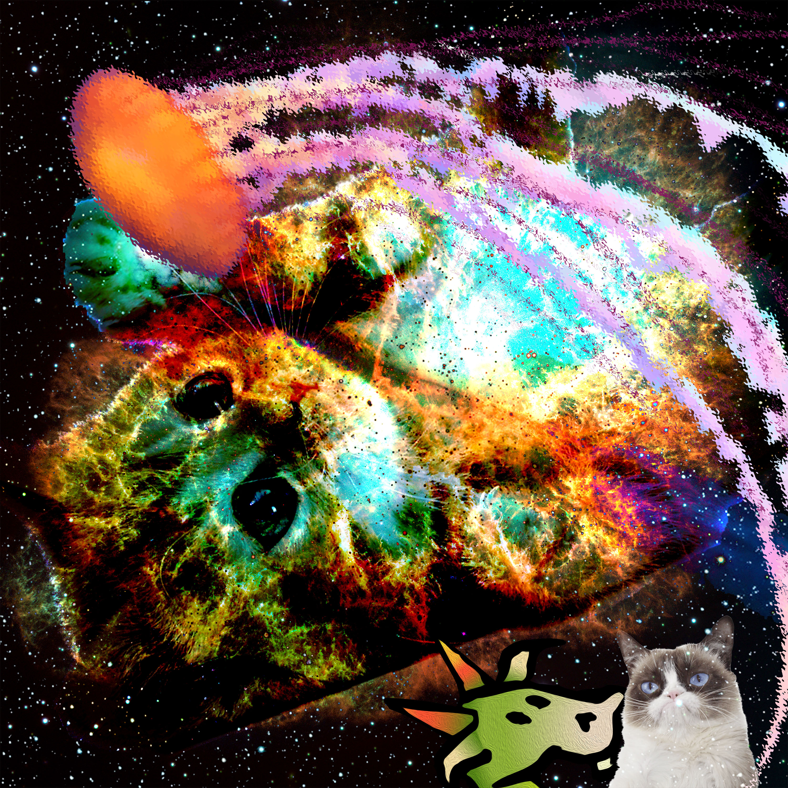
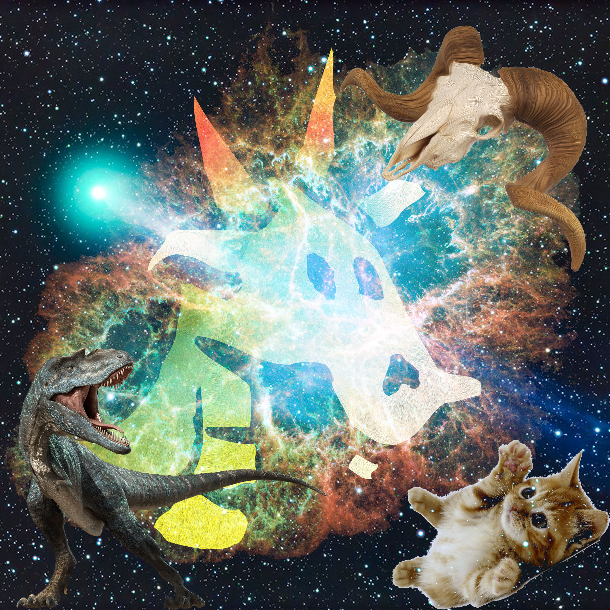

Kites

I mashed up a couple memes.
My name is Ashley Rose and I am an interdisciplinary artist. This portfolio represents my experiments with digital art. Media i have worked with include, but are not limited to, digital painting, video, code, and digital photography. I am still working to improve my skills across various media. I explore various media in order to better my own ability to create narratives. The works in this portfolio represent my explorations in video and net art. These pieces allow me to explore other ways to go about my art. My interests are video games, costume creation, writing, and watercolor painting. I use each of these alongside digital art to better my own art.

I mashed up a couple memes.
I mashed up a couple memes.



The process that goes into creating anything is often forgotten once the product is created. Be it a film, a painting, or a piece oc clothing, there is generally a disconnect between the creation of something and the product most people see. With this project, I seek to bridge this divide.

I find the process of creating art interesting. Professors have told me it is just as important to document the creation of a piece as it is to document the final product. With this work, I seek to reveal the various aspects of creating a watercolor painting. Revealing the work area is part of my vision in looking at the process. A lot can be said about an artist simply by observing their work space.
 In this project, i used a Fibonacci Sequence at the center of the image which I set to rotate sporadically. Originally I had hoped to find a use for recursion in my code, but it did not work for what I wanted while the spiral did. I like the fact the whole piece feels like an old screensaver. The other aspects include two arrays, one in the green objects along the bottom the other in the bouncing balls. About 500 frames in, the bubbles in the background switch from green to purple. At about 700 frames in, the green objects are allowed to wiggle on their own.
In this project, i used a Fibonacci Sequence at the center of the image which I set to rotate sporadically. Originally I had hoped to find a use for recursion in my code, but it did not work for what I wanted while the spiral did. I like the fact the whole piece feels like an old screensaver. The other aspects include two arrays, one in the green objects along the bottom the other in the bouncing balls. About 500 frames in, the bubbles in the background switch from green to purple. At about 700 frames in, the green objects are allowed to wiggle on their own.


I mashed up a couple memes.

This was a collaboration between myself, Savannah Singh, Aleisha Marie La Roque, Garrett Canepa.

I mashed up a couple memes.